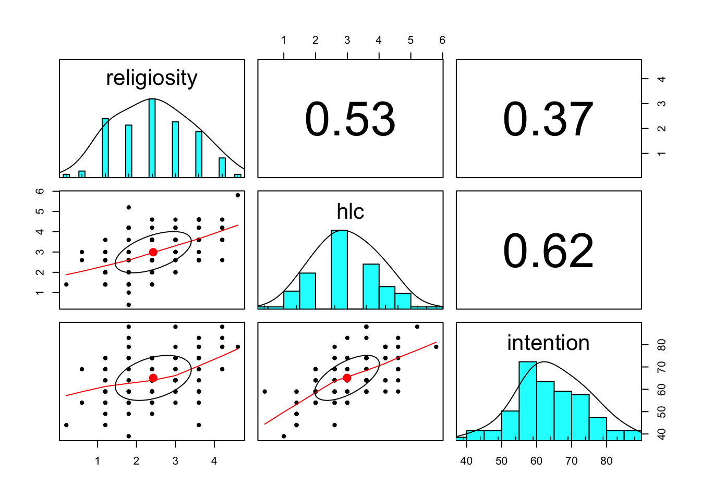
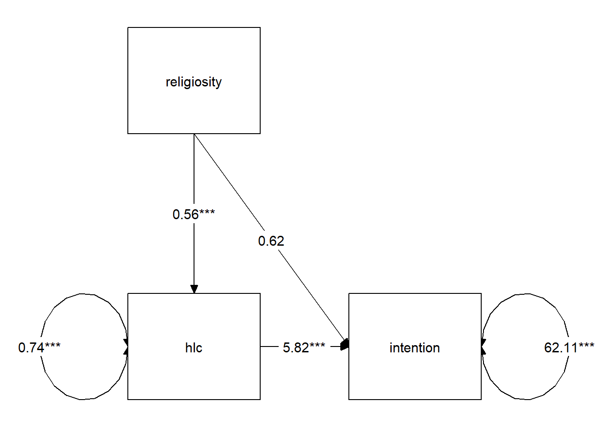

8. Mediation
Relevant packages
- lavaan
- semPlot or tidySEM
- mediation
What is ‘mediation’?
Let’s imagine we are interested in peoples’ intention to get vaccinated, and we observe the following variables:
- Intention to vaccinate (scored on a range of 0-100)
- Health Locus of Control (HLC) score (average score on a set of items relating to perceived control over ones own health)
- Religiosity of upbringing (average score on a set of items relating to the religiosity of an individual’s childhood).
If we draw out our variables, and think about this in the form of a standard regression model with “Intention to vaccinate” as our outcome variable, then all the lines are filled in for us (see Figure 1).
But what if our theory suggests that some other model might be of more relevance? For instance, what if we believe that participants’ religiosity has an effect on their Health Locus of Control score, which in turn affects the intention to vaccinate (see Figure 2)?

In this case, the HLC variable is thought of as a mediator, because it mediates the effect of religiosity on intention to vaccinate. In this theoretical model, we distinguishing between two possible types of effect: direct and indirect.
Direct vs Indirect
In path diagrams:
- Direct effect = one single-headed arrow between the two variables concerned
- Indirect effect = An effect transmitted via some other variables
We’ve seen how path analysis works in last week’s lab, and we can use that same logic to investigate models which have quite different structures such as those including mediating variables.
Because we have multiple endogenous variables here, then we’re immediately drawn to path analysis, because we’re in essence thinking of conducting several regression models. As we can’t fit our theoretical model into a nice straightforward regression model (we would need several), then we can use path analysis instead, and just smush lots of regressions together, allowing us to estimate things all at once.
Doing Path Mediation 1: Data
We’ll continue with the example in Figure 2, for which we have simulated some data.
Data: VaxDat.csv
100 parents were recruited and completed a survey that included measures of Health Locus of Control, Religiosity, and a sliding scale of 0 to 100 on how definite they were that their child would receive the vaccination for measles, mumps & rubella.
- Intention to vaccinate (scored on a range of 0-100)
- Health Locus of Control (HLC) score (average on a set of 5 items - each scoring 0 to 6 - relating to perceived control over ones own health)
- Religiosity of upbringing (average score on a set of items relating to the religiosity of an individual’s childhood).
The data is available at https://uoepsy.github.io/data/vaxdat.csv
First we read in our data:
vax <- read_csv("https://uoepsy.github.io/data/vaxdat.csv")
summary(vax) religiosity hlc intention
Min. :-1.0 Min. :0.40 Min. :39.0
1st Qu.: 1.8 1st Qu.:2.00 1st Qu.:59.0
Median : 2.4 Median :3.00 Median :64.0
Mean : 2.4 Mean :2.99 Mean :65.1
3rd Qu.: 3.0 3rd Qu.:3.60 3rd Qu.:74.0
Max. : 4.6 Max. :5.80 Max. :88.0 It looks like we have a value we shouldn’t have there. We have a value of religiosity of -1. But the average of 5 items which each score 0 to 6 will have to fall within those bounds.
Let’s replace any values <0 with NA.
vax <-
vax %>%
mutate(religiosity = ifelse(religiosity < 0, NA, religiosity))
summary(vax) religiosity hlc intention
Min. :0.20 Min. :0.40 Min. :39.0
1st Qu.:1.80 1st Qu.:2.00 1st Qu.:59.0
Median :2.40 Median :3.00 Median :64.0
Mean :2.43 Mean :2.99 Mean :65.1
3rd Qu.:3.00 3rd Qu.:3.60 3rd Qu.:74.0
Max. :4.60 Max. :5.80 Max. :88.0
NA's :1 Now let’s just check the marginal distributions of each variable.
There are lots of functions that we might use, but for a quick eyeball, I quite like the pairs.panels() and multi.hist() functions from the psych package.
library(psych)
pairs.panels(vax)
Doing Path Mediation 1: Model Specification
Okay, we’re ready to start thinking about our model.
First we specify the relevant paths:
med_model <- "
intention ~ religiosity
intention ~ hlc
hlc ~ religiosity
"If we fit this model as it is, we won’t actually be testing the indirect effect, we will simply be fitting a couple of regressions.
To specifically test the indirect effect, we need to explicitly define the indirect effect in our model, by first creating a label for each of its sub-component paths, and then defining the indirect effect itself as the product of these two paths (why the product? Click here for a lovely explanation from Aja Murray).
To do this, we use a new operator, :=.
med_model <- "
intention ~ religiosity
intention ~ a*hlc
hlc ~ b*religiosity
indirect:=a*b
":=
This operator ‘defines’ new parameters which take on values that are an arbitrary function of the original model parameters. The function, however, must be specified in terms of the parameter labels that are explicitly mentioned in the model syntax.
Note. The labels we use are completely up to us. This would be equivalent:
med_model <- "
intention ~ religiosity
intention ~ peppapig * hlc
hlc ~ kermit * religiosity
indirect:= kermit * peppapig
"
Doing Path Mediation 1: Model Estimation
It is common to estimate the indirect effect using a bootstrapping approach (remember, bootstrapping involves resampling the data with replacement, thousands of times, in order to empirically generate a sampling distribution).
Why do we bootstrap mediation analysis?
We compute our indirect effect as the product of the sub-component paths. However, this results in the estimated indirect effect rarely following a normal distribution, and makes our usual analytically derived standard errors & p-values inappropriate.
Instead, bootstrapping has become the norm for assessing sampling distributions of indirect effects in mediation models.
We can do this easily in lavaan:
mm1.est <- sem(med_model, data=vax, se = "bootstrap")
summary(mm1.est, ci = TRUE)lavaan 0.6.16 ended normally after 1 iteration
Estimator ML
Optimization method NLMINB
Number of model parameters 5
Used Total
Number of observations 99 100
Model Test User Model:
Test statistic 0.000
Degrees of freedom 0
Parameter Estimates:
Standard errors Bootstrap
Number of requested bootstrap draws 1000
Number of successful bootstrap draws 1000
Regressions:
Estimate Std.Err z-value P(>|z|) ci.lower ci.upper
intention ~
religiosty 0.616 1.112 0.554 0.580 -1.561 2.706
hlc (a) 5.823 0.953 6.110 0.000 3.930 7.625
hlc ~
religiosty (b) 0.557 0.086 6.494 0.000 0.386 0.732
Variances:
Estimate Std.Err z-value P(>|z|) ci.lower ci.upper
.intention 62.112 8.301 7.483 0.000 45.873 78.080
.hlc 0.741 0.103 7.214 0.000 0.544 0.939
Defined Parameters:
Estimate Std.Err z-value P(>|z|) ci.lower ci.upper
indirect 3.243 0.712 4.557 0.000 1.936 4.731We can see that the 95% bootstrapped confidence interval for the indirect effect of religiosity on intention to vaccinate does not include zero. We can conclude that the indirect effect is significant at \(p <.05\). The direct effect is not significantly different from zero, suggesting that we have complete mediation (religiosity has no effect on intention to vaccinate after controlling for health locus of control).
Finally, we can visualise the estimates for our model using the semPaths() function from the semPlot package, and also with the graph_sem() function from the tidySEM package.
Often, if we want to include a path diagram in a report then the output of these functions would not usually meet publication standards, and instead we tend to draw them in programs like powerpoint!)
library(tidySEM)
graph_sem(mm1.est, layout = get_layout(mm1.est))
Partial/Complete Mediation
If we have a variable \(X\) that we take to cause variable \(Y\), then our path diagram will look like so:

In this diagram, path \(c\) is the total effect. This is the unmediated effect of \(X\) on \(Y\).
However, while the effect of \(X\) on \(Y\) could in part be explained by the process of being mediated by some variable \(M\), the variable \(X\) could still affect \(Y\) directly.
Our mediating model is shown below:

In this case, path \(c'\) is the direct effect.
- Complete mediation is when \(X\) no longer affects \(Y\) after \(M\) has been controlled (so path \(c'\) is not significantly different from zero).
- Partial mediation is when the path from \(X\) to \(Y\) is reduced in magnitude when the mediator \(M\) is introduced, but still different from zero.
- The Proportion Mediated is the amount of the total effect of \(X\) to \(Y\) that goes via \(M\). i.e. \(\frac{a \times b}{c}\) in the images above.
Exercises: Conduct Problems
This week’s exercises focus on the technique of path analysis using data on conduct problems in adolescence.
Data: conduct problems
A researcher has collected data on n=557 adolescents and would like to know whether there are associations between conduct problems (both aggressive and non-aggressive) and academic performance and whether the relations are mediated by the quality of relationships with teachers.
| variable | description |
|---|---|
| ID | Participant ID |
| Acad | Academic performance (standardised) |
| Teach_r | Teacher Relationship Quality (standardised) |
| Non_agg | Non-aggressive conduct problems (standardised) |
| Agg | Aggressive conduct problems (standardised) |
The data is available at https://uoepsy.github.io/data/cprobteach.csv
Question 1
First, read in the dataset from https://uoepsy.github.io/data/cprobteach.csv
Question 2
Just to initially get a sense of the total effects of different types of conduct problem on academic performance, we’ll fit a simple regression model.
Use the sem() function in lavaan to specify and estimate a straightforward linear regression model to test whether aggressive and non-aggressive conduct problems significantly predict academic performance.
How do your results compare to those you obtain using the lm() function?
Question 3
Forget about aggressive conduct problems for the time-being.
Specify a model in which non-aggressive conduct problems have both:
- a direct on academic performance
- an indirect effect via teacher relationships on academic performance
Question 4
Make sure in your model you define (using the := operator) the indirect effect in order to test the hypothesis that non-aggressive conduct problems have both a direct and an indirect effect (via teacher relationships) on academic performance.
Fit the model and examine the 95% CI.
Question 5
Specify a new parameter which is the total (direct+indirect) effect of non-aggressive conduct problems on academic performance.
Hint: we should have already got labels in our model for the constituent effects, so we can just use := to create a sum of them.
Exercises: More Conduct Problems
Question 6
Now specify a model in which both aggressive and non-aggressive conduct problems have both direct and indirect effects (via teacher relationships) on academic performance. Include the parameters for the indirect effects.
Hints
We’ve got two predictors, and one mediator.
So two indirect effects. make sure to give unique labels to the paths!
Question 7
Now estimate the model and test the significance of the indirect effects
Question 8
Open powerpoint, or google drawings, or microsoft paint (!), and create a diagram of your estimated model.

Question 9
Write a brief paragraph reporting on the results of the model estimates in Question B2. Include a figure or table to display the parameter estimates.
Mediation using separate models
Following Baron & Kenny 1986, we can conduct mediation analysis by using three separate regression models.
- \(y \sim x\)
- \(m \sim x\)
- \(y \sim x + m\)
Step 1. Assess the total effect of the predictor on the outcome y ~ x. This step establishes that there is an effect that may be mediated.
mod1 <- lm(intention ~ religiosity, data = vax)
summary(mod1)$coefficients Estimate Std. Error t value Pr(>|t|)
(Intercept) 55.67 2.554 21.80 3.71e-39
religiosity 3.86 0.976 3.95 1.46e-04Step 2. Estimate the effect of the predictor on the mediator m ~ x:
mod2 <- lm(hlc ~ religiosity, data = vax)
summary(mod2)$coefficients Estimate Std. Error t value Pr(>|t|)
(Intercept) 1.643 0.2354 6.98 3.70e-10
religiosity 0.557 0.0899 6.19 1.43e-08Step 3. Estimate the effects of the predictor and mediator on the outcome y ~ x + m. We need to show that the mediator affects the outcome variable.
mod3 <- lm(intention ~ religiosity + hlc, data = vax)
summary(mod3)$coefficients Estimate Std. Error t value Pr(>|t|)
(Intercept) 46.109 2.655 17.36 2.23e-31
religiosity 0.616 0.978 0.63 5.30e-01
hlc 5.823 0.935 6.23 1.23e-08Step 4. If Steps 1-3 all show effects of y~x, m~x and y~m|x1 respectively, then we can assess mediation. We need to look at the effect of the predictor on the outcome after controlling for the mediator. This is from the same third model above. If the effect of the predictor is now zero, then we have complete mediation. If it is non-zero, then we have partial mediation.
Optional - packages for estimating mediation effects
The mediation package is a very nice approach that allows us to conduct mediation this way, and it also extends to allow us to have categorical variables (we can use a logistic regression as one of our models), or to have multilevel data (our models can be fitted using lme4).
library(mediation)
mymediation <- mediate(model.m = mod2,
model.y = mod3,
treat='religiosity',
mediator='hlc',
boot=TRUE, sims=500)
summary(mymediation)
Causal Mediation Analysis
Nonparametric Bootstrap Confidence Intervals with the Percentile Method
Estimate 95% CI Lower 95% CI Upper p-value
ACME 3.243 1.941 4.72 <2e-16 ***
ADE 0.616 -1.719 2.83 0.61
Total Effect 3.858 1.699 5.67 <2e-16 ***
Prop. Mediated 0.840 0.460 2.01 <2e-16 ***
---
Signif. codes: 0 '***' 0.001 '**' 0.01 '*' 0.05 '.' 0.1 ' ' 1
Sample Size Used: 99
Simulations: 500 - ACME: Average Causal Mediation Effects (the indirect path \(\mathbf{a \times b}\) in Figure 5).
- ADE: Average Direct Effects (the direct path \(\mathbf{c'}\) in Figure 5).
- Total Effect: sum of the mediation (indirect) effect and the direct effect (this is \(\mathbf{(a \times b) + c)}\) in Figure 5).
Footnotes
read
y~m|xasy~mcontrolling forx↩︎